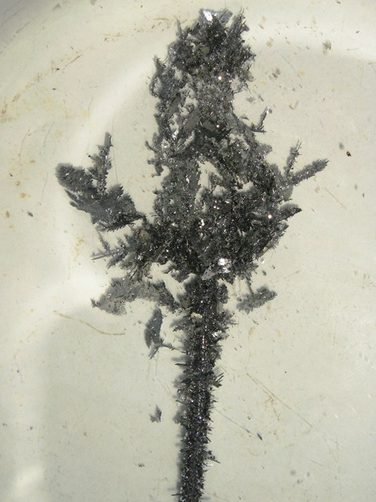

Sembra strano, ma nella vecchia quanto ufficiosa nomenclatura chimica esistevano pure gli alberi, per lo più dedicati all'antica mitologia: e così c'è l'albero di Diana, l'albero di Marte, quello della Luna... e quello di Saturno.
E' chiaro che se si parla di Saturno, in chimica, il pensiero corre subito al piombo.
Non si chiama forse saturnismo l'avvelenamento cronico causato da questo metallo?
Non si chiamava forse zucchero di Saturno un suggestivo nome dell'acetato di piombo?
C'è la possibilità di provarne a fare uno di questi alberelli: facciamolo allora!
Questo esperimento l'ho chiamato elettroalbero perchè la deposizione del metallo avviene per via esclusivamente elettrica, non elettrochimica per spostamento metallo/ione; si tratta di una elettrolisi in senso stretto, facile e carina.
I risultati vengono abbastanza diversi ogni volta che si cambiano i parametri di lavoro, si può quindi sperimentare a piacere e i risultati sono sempre diversi e belli da vedere.
Io ho fatto nel modo seguente, provate magari a variare i tre fattori: concentrazione, corrente e tensione.
- Preparare una cinquantina di ml di soluzione al 10% di nitrato di piombo e aggiungervi un paio di ml di HNO3; porre in un Petri o in un cristallizzatore in modo che il livello di liquido sia abbastanza sottile.
Come elettrodi ho usato una lamina di piombo all'anodo ed un filo dello stesso metallo al catodo. La soluzione è molto conduttiva e bastano pochi volt per avere una corrente di parecchi mA, quindi non esagerare con la tensione.
Dopo pochi minuti si vede già il deposito catodico sotto forma di cristallini/laminette di piombo metallico splendente, che appaiono come belle ramificazioni dendritiche.
In una ventina di minuti la deposizione si ramifica verso l'anodo ed è completa.
In mancanza di elettrodi di piombo si può usare il filo per le saldature della vecchia lega Sn/Pb.
E' opportuno che l'anodo abbia superficie maggiore, ed il catodo sia filiforme.
Con il minimo di teoria si può dire che il -Pb2+ al catodo acquista 2 elettroni e si riduce a metallo, mentre all'anodo succede esattamente l'inverso, il Pb si ossida e passa in soluzione come -Pb2+.
Se la soluzione non fosse un po' acida si avrebbe alcalinizzazione 2 H2O + 2e --> H2 + 2 OH- e formazione di torbidità dovuta all'idrossido di piombo, cosa evitata dalla presenza dell'acido nitrico.


In alto si vede parte dell'anodo e sotto il filo catodico ricoperto dall'alberello ad aghetti e squamette del metallo saturnino che sta crescendo.
A proposito di alberi: se avessi ancora un po' di vetro solubile (il vetro solubile è silicato di sodio, una sostanza che in un lab non serve proprio a niente!) riproverei a fare il vaso col giardino chimico, una delle prime cose che preparai qualche annetto fa: ci starebbe bene come giocoso intermezzo in qualche parte del blog, come un vaso di fiori sulla finestra.
In mancanza, ci metto questo elettroalberello.